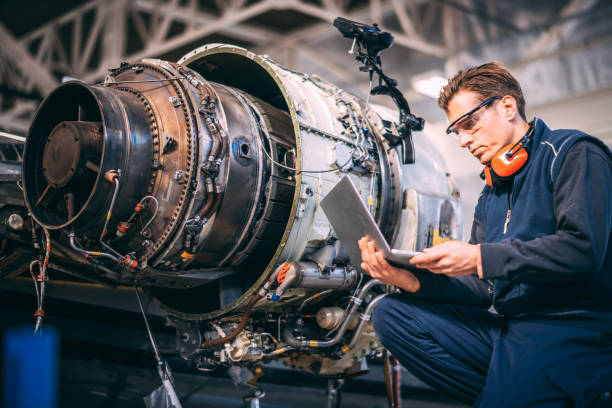
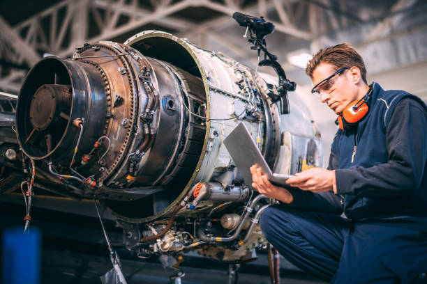
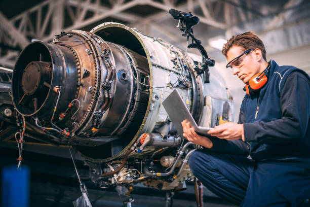
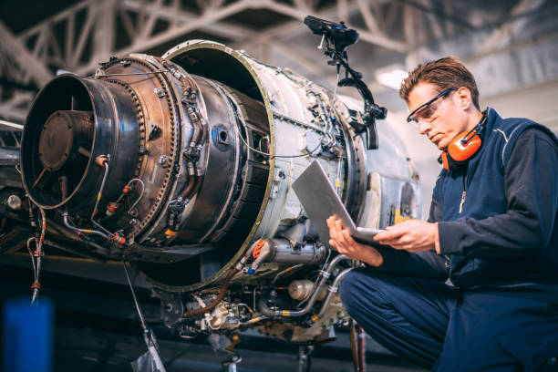

Aircraft
.jpg) 



This unique combination of 3 years integrated program makes students eligible for multiple job opportunities including jobs which compulsory requires a minimum of three years degree as an eligibility criterion in Government as well as the private sector. Aircraft maintenance engineering courses can be pursued with our Institute which is approved by DGCA Govt. of India. The B.Sc. Aeronautics is affiliated to one of the top-notch Universities of Mumbai. B.Sc. Aeronautics degree is designed to enable the student to acquire the necessary qualification to enter into the job market in any field of Aviation such as Traffic Control, Crew & Manpower scheduling, In-Flight Service Department, Security, Civil Works Department, Line and Major Maintenance Department of Engineering etc. It is also possible that the graduates (B.Sc. Aeronautics) enter the field of Non- Technical Streams in the Aviation Industry like Commercial Dept., In-Flight Service Dept., Ground Support Dept., Security Dept., etc. It is therefore imperative that such a degree course would help the students to make their career in Aviation. All government & private aviation organizations and aircraft & spacecraft manufacturing and testing units generally require the trained candidates.
Maintenance related to Airframe: Performing scheduled/ Non-scheduled maintenance, making emergency repairs, maintenance related to air frame viz. mechanical and Aircraft hydraulic systems, Air Conditioning System, Aircraft Pressurization System, Aircraft Landing Gear System, Aircraft structure, Aircraft Pneumatic System etc. Maintenance related to Aircraft Engine, Aircraft Fuel System, Aircraft Oil System, Engine Starting & Ignition System, Fire Protection System etc.
Performing scheduled/ Non-scheduled maintenance related to following: Aircraft Instrument Systems. Automatic Pilot Systems (fixed and rotary wing), including Auto-throttle and Auto-land Systems. Aircraft Radio Communication, Navigation and Radar Systems. Aircraft Electrical Power Generation and Distribution to Avionic Systems.